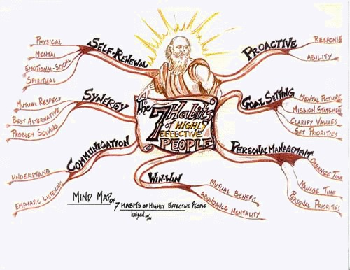
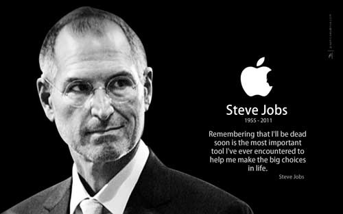
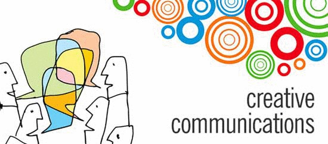
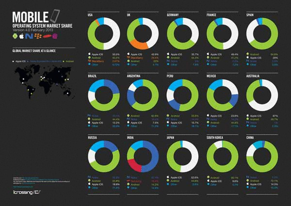

10分でわかる『７つの習慣』
数年前から大きく話題になっている『７つの習慣』ですが、意外とまだ読んでいないという人も多いのではないでしょうか。
書籍を購入する方がより詳しく載っていますが、ここではその繋ぎとして、10分で分かるように説明してみようと思います。
７つの習慣とは

『７つの習慣』は、様々な悩みや夢を実現するために、スティーブン・R・コヴィーが1986年に提唱した手法です。
その７つの習慣とは主に以下のものです。
- (1) 自分を変えようと常に意識する
- (2) なりたい自分を想像してから始める
- (3) 重要な事を後回しにしない
- (4) 自分も相手も幸せな方法を探す
- (5) 相手のことを心から理解する
- (6) 対立は成果への第一歩と考える
- (7) 肉体や精神を日々磨く
では早速、７つの習慣の内容を見て行きましょう。
0. ７つの習慣を実践する前に
７つの習慣をより効果的にするために、以下のことを意識すると良いそうです。
0-1. 表面的な能力よりも、人格的な豊かさが本当の幸せを呼ぶ
これは実感している人も多いのではないでしょうか。
小手先のテクニックよりも、その人の個性的な一面が人を惹きつける。
本当にこのことは大事にしなければいけないですね。
0-2. 人は、物事を見たいように見ている
この絵は非常に有名だと思いますが、人々はまるでこの絵のように、ある物事を自分の思ったように、感じたように見ています。
決して、自分が感じたように他人も感じているとは限らないということです。
このことは自分の見ている世界は必ずしも真実ではないということを教えてくれます。
0-3. 結果を変えるには、ものの見方から変える
先ほどの項目とほとんど同じ内容ですね。
結果を変えるために環境を変えようとする人が多い（私も）ですが、実は見方を変えると世界が大きく変わるという事実があります。
とある本では、知識を得る本当の意味は、ものの見方を変えるためだと言っている本まであります。
例えばクラシック音楽がつまらなくても、楽譜が読めるようになれば面白いというのはよく聞きますね。
0-4. 毎日の少しずつの変化が、自分を大きく変える
「自分を変えよう！」…と決意しても、結局何もできないですよね。
それよりも、毎日の少しずつの変化を大切にしていけば、最終的には自分が大きく変わることになります。
例えば１年を振り返ると、意外と多くのことをしていたりしませんか？
つまり１年後の自分は、既に変わっているということです。
0-5. 自分が変われば、環境も変わる
あなたの所属している会社や学校、サークルは、誰が作ったものか知っていますか？
会社や学校、サークルは、まず誰かが作ろうと思って設立したはずです。
つまり、環境は最初からあるものではなくて作るものだということです。
1. 自分を変えようと常に意識する
「自分を変えたい」という強い気持ちが、自分を動かします。
まずは自分がどんな人間なのか、どんな行動をしているのかを自覚することから始めてみましょう。
1-1. 自分の行動を自覚する
自分がある選択をするとき、なんとなく選んでいると、環境に流されてしまいます。
自分の選択をしっかり自覚することが変化への第一歩です。
1-2. 自分の影響の輪がどこまでかを意識する
自分の発言、行動がどこまで影響があるかを意識することで、自分のどこを改善すればいいか、自分の人格はどんなものなのかということを強く意識することに繋がります。
このことが最終的に自分を変えることに繋がります。
2. なりたい自分を想像してから始める
自立した行動が出来るようになっても、目標がなければうまく前に進めません。
理想の自分を描きながら、夢に向かって動くことが大切です。
2-1. 目的を持って始めることが、自分を正しい方向へ導く

スティーブ・ジョブズ（初代AppleCEO）は、はっきりとした理想を貫いた人物として有名です。
やはり目標はとても大切で、目標が分からなくなったときは一人理想の人物を決めて、「彼ならこんなときどうしただろう」と考えるのが一番いいと思います。
2-2. 人生の筋書きを具体的に描いてみる。
音楽プロデューサーのつんく♂も、自身の自叙伝の中で書いていますが、自分がこうなりたいというのを具体的にイメージすることが大切です。
こうすることで、目標がより具体的になり、おかしな目標もすぐにわかります。
この方法の一番いい所は、一時の優越感にひたれるので、実際に実現したいという願望が生まれるところですね。
2-3. 自分の人生の原則をキャッチコピーにする
様々なシーンで、自分が何かを選択するときに、ある原則を感じることはありませんか？
都会が嫌いだとか、家族を大切にするとか、そういったことを感じたときは、それをこれからのキャッチコピーにしましょう。
そうすることで、何か判断に迷ったときにすぐに判断ができ、人生に一本の筋を通すことができます。
3. 重要な事を後回しにしない
「あーやっちゃった」なんてことありますよね。
やらなきゃいけないって分かってても、つい前日まで先延ばししてしまう。
そういうことを減らすことで、より人生が楽しくなる可能性があります。
3-1. 時間は管理できない！ 重要事項の順序を決める
１日１時間だけ早く起きて頑張るぞ！・・・なんて、決めても出来た覚えがありません。
時間は決して管理できないというのが、先人の知恵として伝わっています。
ではどうするのか。それは、空いた時間を有効活用できるように、優先順位を決めることです。
それだけであら不思議。頭がいっぱいっぱいだったことが、スッキリしてきます。
これで余裕が出て、自分の本当にやりたかったことが出来ますね。
3-2. 「緊急ではないが重要なこと」に時間を割く
「もうちょっと勉強したい」…そう思うことはありませんか？
その気持ちがあれば、時間がなくても時間をもっと割くべきです。
そうすることで、単なる表面的な技術から、もっと深い知見となって行き、将来的には大きな投資になっていきます。
3-3. 役割と目標を頭に入れて行動する
あなたがどんな立場にいるとしても、家族の中で、会社の中で、友だちの中で役割を持っているはずです。
その役割の中で目標を決めて行動をするのが大切です。独りよがりな行動は全体として負の遺産になりかねません。
ですが、最も大事なことはスケジュールを忠実に守ることよりも、全体にとって有益なことを考えながら行動することが一番大事です。
3-4. 時間が足りない時は誰かに任せることも大切
あなたは今テンパッていませんか？一人で全部やろうとしていませんか？
そんな時は、誰かに任せることも大切です。
誰かに任せることで、その人にとって勉強になり、全体にとってはあなたへの依存を減らすことができるので、あなた自身も楽になります。
誰かに任せるときは、ただ丸投げするのではなくて、ちゃんとフォローしてあげることも大切です。
4. 自分も相手も幸せな方法を探す
自分の利益を再優先していませんか？
そんなことをしていると、誰からも相手にされなくなってしまうばかりか、全体として利益が減ってしまいます。
人と人との関係や、ビジネスは常に「Win-Win」な関係になることを目指したいものです。
4-1. 相手と自分の関係を大切にする
人間関係で一番大切なのは、お互いがどういう技能を持っているかではなくて、お互いの信頼関係です。
例えばある人ばかりひいきにする人がいて、自分の方がすごいのに…、というシチュエーションはよくありますよね。
そういうときは、能力云々ではなくて、あなたとその人との信頼関係がまだ構築できていないのだと思います。
4-2. 他人に「与える」人こそ、豊かな人になれる
美味しそうなケーキですね。こういうシチュエーションで、１つ余ったらどうしますか。
こういうとき、一つ貰うと「得」で、一つ失うと「損」ですよね。
これがまさにWin-Winになる前のシチュエーションです。
ということは、Win-Winにするためには、一つ相手に「与える」＝自分が損するということが大切です。
5. 相手のことを心から理解する
相手のことを知るというのは、コミュニケーションの第一歩です。
相手のことを知らないのに勝手なことを言うと、相手を苛立たせたり、怒らせるかもしれません。
相手の気持ちを分かるようになるのは難しいですが、少しずつ知ろうとする気持ちが大切な気がします。
5-1. 相手のことを知るように努めてから、自分のことを話す
私たちはつい、自分から話しがちですよね。
自分から名乗ることは礼儀ですが、最初は相手のことを素直に聞いてあげましょう。
最初から否定せず、素直に聞いてから自分の意見を言うことで、より相手を理解することができます。
聞き上手になることは難しいですが、最大限に相手を尊重することを大事にしたいものです。
5-2. 相手の話に感情移入するスキルを磨く
相手の話に感情移入してことはありますか？
実は感情移入することは難しいことです。なぜなら、相手の世界と自分の世界は違うからです。
自分では興味深い話だと思ったのに、相手から「へー、そうなんだねー」と言われて傷ついたことありませんか？
それと全く同じことで、相手は簡単に傷つきます。出来るだけ相手と同じ気持ちになるように心掛け、感情移入することを大切にしましょう。
6. 対立は成果への第一歩と考える
話し合いをしていたときに、相手と対立するとつい感情的になってしまいませんか？
対立は負のイメージが強いですが、実は新しい発想が生まれるチャンスなのです。
出来るだけ感情的にはならず、公平にディスカッションをすることが、成功への第一歩です。
6-1. 違う考えの人が集まると、相乗効果が生まれる
「大学派閥が集まると良くない」ということを聞いたことがありませんか？
実は確かな根拠があり、同じ考えの人が集まると考え方が固定化してしまい、新しい発想が生まれにくいのです。
つまり逆に、違う考えの人が集まれば、新しい発想が生まれやすいということです。
出来るだけ相手を尊重しつつ、積極的に違う考えの人と接するようにしましょう。
6-2. コミュニケーション次第で相乗効果は大きく変化する

相乗効果というのは、いかに創造的なコミュニケーションをとったかに比例します。
つまり、どんなに優れた人たちが集まっても、コミュニケーション次第では悪影響がある場合もあります。
| 議論のタイプ | 相乗効果 | 信頼関係 |
|---|---|---|
| 防衛的 | ▼低い | ▼低い |
| 妥協的 | ▶中程度 | ▶中程度 |
| 積極的 | ▲高い | ▲高い |
いかに積極的で創造的な議論をするかによって、相乗効果は変化するということを頭に入れておきたいです。
7. 肉体や精神を日々磨く
日々立ちはだかる困難に立ち向かうためには、最終的には自分自身しかありません。
自分自身をいかに磨いていくかで、人生がどのように変わるかが決まってきます。
7-1. 自分自身への投資を惜しまない
自分を磨くためには、肉体や精神のほかに、社会的な地位や知性なども必要です。
これらは１日で成るものではないので、投資を惜しまず、自分自身を向上させましょう。
7-2. 毎日身体を鍛える
運動をには様々な利点があります。
運動はストレスの解消になり、精神安定につながります。運動せず勉強するより、運動を併用したほうが集中力は高くなります。
それは最終的に、情緒の安定に繋がり、社会的地位を安定させ、知性を磨くことになります。
是非毎日体を鍛えましょう。
7-3. 他者との繋がりですべてを鍛える
他者との繋がりはあらゆるものを鍛えます。
人は一人では生きていけないと言いますが、全くその通りで、人は他者から刺激を受けながら、楽しみや希望を持ちながら生きています。
人との繋がりは精神を安定させたり、社会性を高めたりします。
出来るだけ他者と関わりをもち、刺激を受けながら、自分を磨いていきたいですね。
まとめ
いかがでしたか？少し長くなってしまいましたが、その分だけ分かりやすく説明したつもりです。
７つの習慣は７つすべての相乗効果で成り立っているそうですので、出来るだけバランスよく行うのが良いそうです。
８つ目の習慣も新登場
ちなみに、著者のスティーヴン・R・コヴィーさんは、さらにこれらの習慣を高める「８つ目の習慣」を現在提唱しているそうです。
是非著書も購入して読んでみてはどうでしょうか。

 | 世界の凄すぎるダンボールアート10選 |
|  | 世界のインターネット事情 - Android vs iPhone |
| サイバー犯罪の標的となっている『Bitcoin』 | |
| 『GOM Player』を狙ったウイルスが発生 | |
| 10分でわかる『７つの習慣』 |